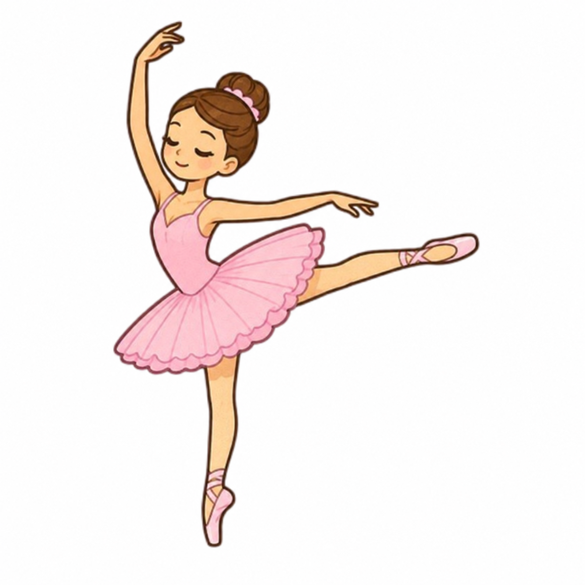

Meu primeiro post!
Por: Rayssa Medeiros
Sejam bem-vindos ao meu novo blog! Aqui vou compartilhar dicas sobre dança, cuidados, rotinas e curiosidades desse universo.
Um lugar de compartilhar dicas sobre dança!

Por: Rayssa Medeiros
Sejam bem-vindos ao meu novo blog! Aqui vou compartilhar dicas sobre dança, cuidados, rotinas e curiosidades desse universo.

Por: Rayssa Medeiros
Uma alimentação saudável é essencial para as bailarinas, pois fornece energia para os treinos, ajuda na recuperação muscular e contribui para a saúde e o bom desempenho na dança.
A dança é uma forma de expressão artística que combina movimentos, música, técnica e criatividade.
Neste vídeo, Luciana Sagioro encanta no palco do Prix de Lausanne, mostrando que cada passo carrega muito mais do que técnica: carrega dedicação, coragem e amor pela dança. Sua trajetória inspira jovens bailarinas a acreditarem em seus sonhos e lembra que, com paixão e perseverança, a dança pode nos levar muito além do que imaginamos. 🩰💗